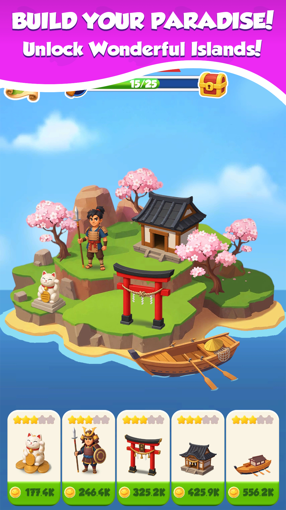
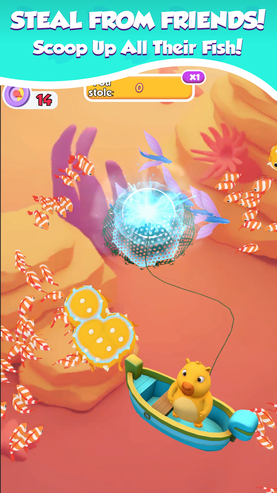
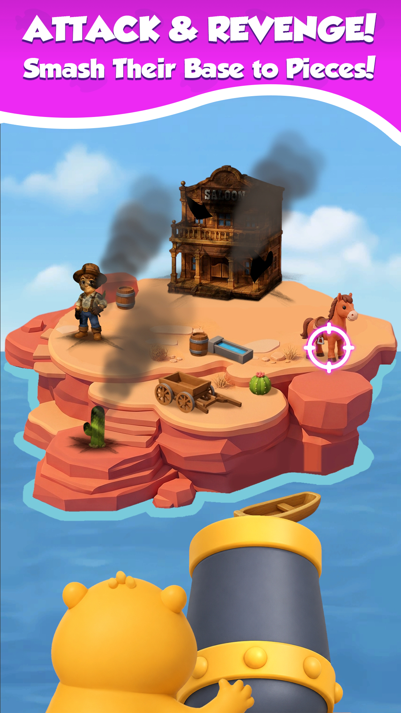

整体质量和操作手感需要对标成熟产品，不能只用低完成度原型验证。
海外休闲 · 制作人 · 2026.04–2026.11
CaptainCapy
用 Coin Master 式资源循环承接长线，用捕鱼事件强化单次体验。目标不是把系统做全，而是在 10 人团队和有限预算内，交付一个真正可以回答产品问题的首测版本。
项目完成从立项到首测包交付，其中 6 周完成可演示 Demo；形成首测包输出阶段的累计消耗约 100 万元。案例重点说明如何在有限团队和预算内完成产品化与发行准备。
10 人团队
6 周 Demo
6 周 Demo


公司卓瀚科技
角色制作人
预算与消耗批准 300 万 / 首测包输出阶段约 100 万
当前状态首测包已上架，测试待启动
01
首测先回答三件事：
首测先回答三件事：
循环、体验、商业化。
项目同时包含转盘、捕鱼、城建、活动、商城和卡牌等多套结构。要在有限周期内交付，优先级必须回到验证目标。
首测前真正需要回答的，是核心循环能否被理解、首日体验能否成立，以及商业化入口是否可用。功能数量不在答案里。
10 人团队、有限周期、批准预算 300 万元，需要同时完成研发、商店、支付与归因。
原规划在首测前保留卡牌系统，但它与首测核心问题没有直接关系。


02
先拆循环，再排版本。
立项脑图把产品方向、目标用户、美术包装、系统与数值放在同一张图上。随后我把这些结构映射到版本节奏。
转盘抽取体力、金币与事件用高频反馈组织单次体验
捕鱼 / 破坏奖励兑现与视觉爽感借玩法强化随机奖励
资源与成长建设岛屿、解锁里程碑把单次体验接入长期目标
资源缺口回到下一次抽取让消耗重新制造行动动力
从验证问题倒推版本
首月版本先完成转盘、捕鱼场景与基础事件；Demo 版本补城建、商城、任务、活动与 10 个章节；首测版本再补长线养成、发行与商业化基础。每阶段都有清晰的“进入下一阶段”条件。
拆转盘与事件概率
把特殊事件前置判定，普通事件和特殊事件分别设计权重。以持续小奖维持获得反馈，用隐藏保底减少连续负体验。
控制资源产销
建筑升级、体力恢复、活动返还与广告产出共同决定单日节奏。目标不是单点数值漂亮，而是让不同投入层级的玩家都有可推进的路径。
按验证价值砍范围
首测前删除卡牌系统，释放约 20 人天程序工作和对应美术资源，把程序与美术产能集中到转盘手感、捕鱼表现和前期活动。
同步补齐发行基建
把 Google Play、IAP 和归因链路纳入“可首测”的完成定义，避免研发包完成但无法进入真实测试。
03
把我的职责，
把我的职责，
变成可验收的交付。
制作人的职责包括范围、里程碑、预算、系统与数值方向，也包括跨程序、美术、运营的优先级协调。
用阶段门槛控制内容扩张。Demo 和首测分别对应不同的验证目标，未通过前不提前吃下完整版本产能。
首测包输出阶段累计消耗约 100 万元将转盘数值、捕鱼事件、建筑成长与资源产出放在同一张经济表中验证，并持续调整操作反馈与视觉节奏。
主导玩法、系统与数值框架版本任务表覆盖策划、客户端、服务端、美术、动画和验收，每周推进依赖与风险，完成可安装包和发行链路。
6 周 Demo / 5 个月后首测包交付的不只是一个安装包
项目在 Demo 阶段完成核心循环、城建、活动、商城和新手引导，在首测阶段补齐商店、支付、归因与基础上线条件。团队将 AI 工具接入文档、配置与资源候选流程，减少重复整理，但没有用自动化替代玩法与商业判断。
从单次捕鱼奖励继续走到岛屿建设，再通过资源缺口把玩家送回转盘。
04
交付结果与下一阶段。
项目已完成研发、商店、支付和归因链路的首测包交付；下一阶段需要接入真实用户测试与商业数据。
把 0→1 推进到可发行版本
首测包已完成上架与发行链路接入；项目交接时测试尚未启动，因此本案例不引用 CPI、留存、ARPU 等未产生的数据。
Demo 交付6 周从核心循环梳理到可演示版本
首测版5 个月从 Demo 到可安装、可发行的首测包
首测包消耗¥100 万首测包输出阶段累计消耗；批准预算 300 万元
释放产能20 人天删除卡牌系统后释放的程序工作量
05
复盘：控制范围，
复盘：控制范围，
让团队更快到达验证节点。
这次交付验证的是产品化与发行准备能力；下一阶段再由真实数据判断商业化表现。
做得好的
在首测前明确删除低关联系统，让团队对“什么必须先完成”形成共识；研发、发行基建和数据准备并行，而不是等包做完再补。
下次会更强的地方
更早确定发行合作与测试窗口，把 CPI、留存和回收门槛前置到版本排期里。首测前就需要知道：测完后用什么数据决定继续、调整还是停止。